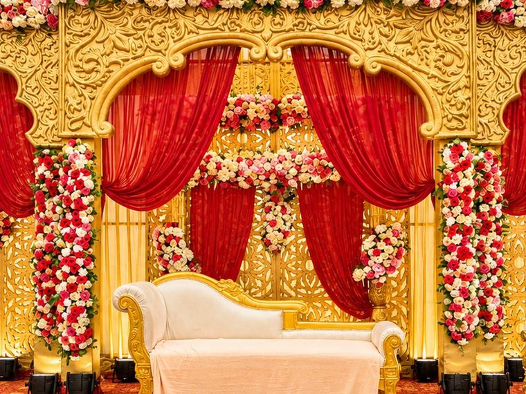

Before you book
Questions worth asking before you book

A site visit is the only part of venue hunting that actually tells you anything. Photographs are taken on the best evening of the year, by someone paid to make the place look larger than it is. Thirty minutes of straight questions will tell you more.
These are the twelve we would ask if we were the family rather than the venue — and, honestly, the ones we would rather be asked. A venue that answers them clearly is a venue that has done this before.
On space and numbers
1. What is the comfortable capacity, not the maximum?
Every venue has two numbers. Ask for the one where people can still reach the food. A good answer gives you both figures and explains the difference.
2. Where does the baraat enter, and where does it stop?
Walk it. A baraat that has to squeeze past parked cars sets the tone for the whole evening.
3. How many cars can park on site?
Then ask what happens to car number sixty. In Varanasi this is the question most families forget and most regret forgetting.
On food
4. Is catering in-house, or can we bring our own?
Both answers are fine. What matters is knowing, because it changes your budget and your coordination.
5. Can we taste the menu before we commit?
If the answer is no, that is information.
6. How many counters, and where do they go?
Dinner for six hundred from four counters is a queue. The layout matters as much as the menu.
On the things that go wrong
7. What is the rain plan, and how long does the switch take?
Ask for minutes and a named person. Covered earlier on this journal, and still the single most useful question on the list.
8. Is there a generator, and does it carry the lights or everything?
A generator that runs the lights but not the air conditioning is a half answer. Find out which one you are getting.
9. Who is on site on the night, and what is their phone number?
The person who shows you around is often not the person who will be there at nine in the evening. Get the second name.
On money and paperwork
10. What exactly is in the quoted price?
Tables, chairs, linen, basic lighting, stage, sound, power, cleaning, taxes. Ask item by item. “Everything” is not an answer.
11. What are the payment stages, and what is the cancellation position?
You hope never to need the second half of that question. Ask it anyway, and get it in writing.
12. How many hours do we have, and what does an overrun cost?
Indian weddings run late. Everyone knows this. Find out what it costs before it happens rather than afterwards.
You are not being difficult by asking these. You are giving the venue a chance to show that it knows its own ground.
One thing to do that is not a question
Visit once in the evening, with the lights on. A lawn at eleven in the morning and the same lawn at eight at night are not the same place, and your wedding is happening at eight at night.
If you would like to walk the ground at City Garden and put these to us, come in the evening and ask all twelve. We would rather you booked with the answers than without them.
Planning your own date at a marriage lawn in Varanasi?
Check if your date is free